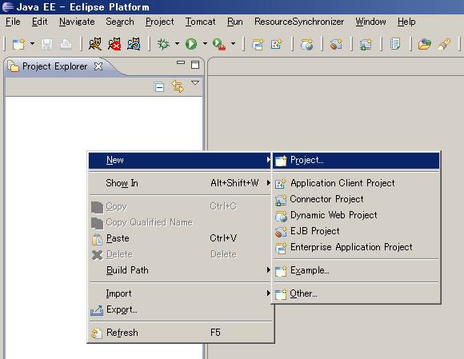
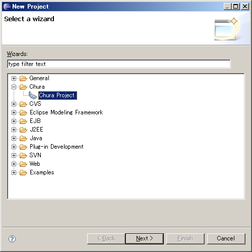
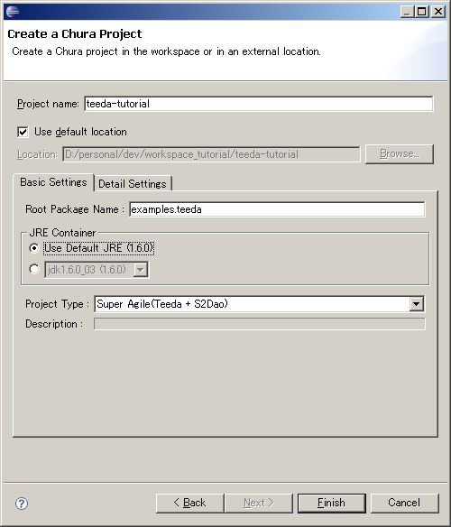

セットアップ
本チャプターのゴール
このチャプターでは、Teedaチュートリアルを実行するための環境をセットアップします.
チャプター完了後には以下の点が習得できます.
- Teedaを使うための開発環境の設定方法
- Teedaプロジェクトの起動の方法
- Teedaプロジェクトの稼動の仕方
Eclipseのセットアップ
本チュートリアルでは、IDE(統合開発環境)としてEclipseを使います.
Eclipseは適宜 Eclipseのサイト からダウンロードしてください.
Eclipseプラグインとしては、下記のものを用います.インストール方法は、 こちら を参照してください.
- Dolteng(どぅるてん) : Teedaを含むSeasar2.4ファミリーであるChuraでの開発を容易にする開発支援プラグイン
- DbLauncher(でぃーびーらんちゃー) : チュートリアルで使うH2データベースを起動するためのランチャ－プラグイン
- Sysdeo Tomcat Launcher plugin : Tomcat起動用のプラグイン
チュートリアルのためのセットアップ
チュートリアルのためにプロジェクトを一つ作成します.
まずはEclipseを起動して、適当な場所にworkspaceを作成してください.
プロジェクトエクスプローラー上で右クリックして、プロジェクトの新規作成を選択します(下記図参照).

次にプロジェクト作成ウィザードで、Chura Projectを選択します.

プロジェクトを作成します.
プロジェクト名に「
teeda-tutorial
」と入力し、ルートパッケージ名に「
examples.teeda
」と入力し、プロジェクトタイプは
Teeda＋S2Dao
を選択します.

では出来上がった環境を確認してみましょう. まずはteeda-turotial内のsrc/main/java/を見てみてください.
examples.teedaで始まるパッケージ構成が以下のように出来上がっているはずです.
構成についての詳細な説明は後述します. いまは下記のような構成が出来上がっていることだけ確認できれば問題ありません.
+examples.teeda.converter +examples.teeda.dao +examples.teeda.dto +examples.teeda.dxo +examples.teeda.entity +examples.teeda.helper +examples.teeda.interceptor +examples.teeda.logic +examples.teeda.service +examples.teeda.validator +examples.teeda.web.error -ErrorPage.java
では次にTomcatを起動して確認してみましょう.
まずはTomcatプラグインを使って、コンテキスト定義を更新します.
やり方は、プロジェクトエクスプローラーで右クリック→Tomcatプロジェクト→コンテキスト定義を更新 です.
「操作が成功しました」と出たらOKを押下して、Tomcatを起動してみましょう.
Tomcatマークを押下するとTomcatが起動します.
正しく起動すれば以下のようなログ（日付などは適宜読み替えてください）が出るはずです.
2008-01-30 17:59:48,953 [main] DEBUG org.seasar.framework.env.Env - 環境変数#Envにファイル(env.txt)から値(ct)が設定されました （途中略） 2008-01-30 17:59:52,328 [main] INFO org.seasar.framework.container.factory.SingletonS2ContainerFactory - Running on [ENV]ct, [DEPLOY MODE]Hot Deploy 2008-01-30 17:59:52,328 [main] DEBUG org.seasar.teeda.core.webapp.TeedaServlet - Teeda : 1.0.11 （以下省略）
では実際に起動してみましょう.
ブラウザを立ち上げて、http://localhost:8080/teeda-tutorial/にアクセスします.
下記のように「Hello World!」と出ているはずです.
これで環境セットアップは完了です.
Hello World!